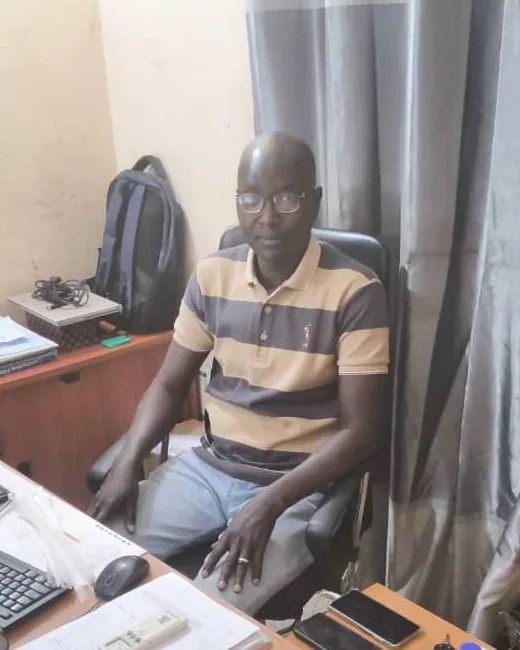
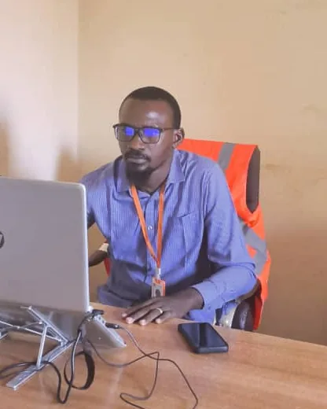
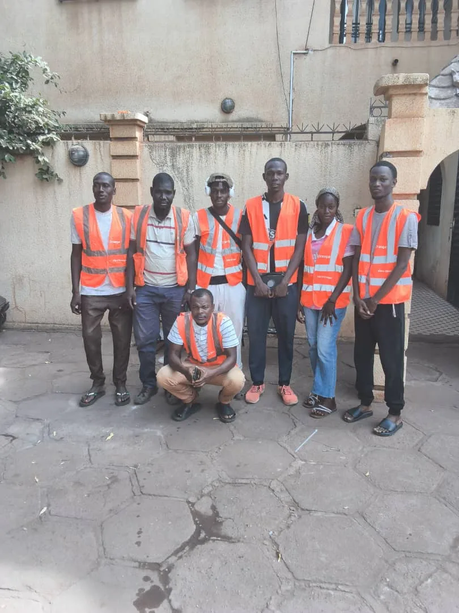

Manager
M. Diouf
Il dirige l’entreprise : relations avec les opérateurs et les partenaires, suivi des contrats et pilotage de l’ensemble des activités.
Implantation, génie civil, montage de pylônes, maintenance et fibre optique : AGS réalise les infrastructures télécoms, du terrain nu jusqu’au client raccordé.
Découvrir nos servicesDu terrain nu à l’antenne qui émet : une seule équipe, sur le terrain, à chaque étape de vos sites télécoms.
Découvrir l’entrepriseCinq métiers complémentaires pour construire, raccorder et entretenir les réseaux de télécommunication.
AGS accompagne les opérateurs et les entreprises du secteur des télécommunications sur toute la vie d’un site : nous trouvons l’emplacement, construisons les ouvrages, montons les pylônes, entretenons les équipements et raccordons les clients à la fibre optique. Nos équipes, formées et équipées, interviennent depuis Bamako sur le terrain, avec un seul objectif : un réseau qui fonctionne.
Équipements de protection, travail en hauteur encadré : chaque membre de l’équipe rentre chez lui en bonne santé.
Une panne coupe des milliers d’abonnés : nous intervenons vite, de jour comme de nuit.
Des travaux conformes aux plans et aux normes des opérateurs, contrôlés et documentés.
Des équipes maliennes, sur le terrain, qui connaissent les réalités du pays.
« Un réseau fiable commence sur le terrain. »
Derrière chaque appel passé et chaque connexion internet, il y a un pylône monté, une fondation coulée, un technicien qui intervient. Notre ambition est de faire ce travail avec sérieux et dans les règles, pour que les Maliens restent connectés, et de former une nouvelle génération de techniciens télécoms dans notre pays.
La Direction générale
Deux responsables, un même objectif : des chantiers bien menés et des sites qui fonctionnent.

Manager
Il dirige l’entreprise : relations avec les opérateurs et les partenaires, suivi des contrats et pilotage de l’ensemble des activités.

Responsable des opérations
Il organise le travail sur le terrain : planification des interventions, coordination des équipes techniques et respect des règles de sécurité.

Le plus simple : écrivez-nous ou appelez-nous directement.
Implantation des sites, maintenance des sites Orange, génie civil, installations clients en fibre optique (FTTH) et montage des pylônes. Chaque service a sa page sur ce site.
Depuis Bamako, partout où nos clients ont besoin de nous au Mali.
« Fiber To The Home » : la fibre optique tirée jusqu’au domicile ou au bureau de l’abonné. Elle offre un internet beaucoup plus rapide et plus stable que les connexions classiques.
Écrivez-nous sur WhatsApp ou appelez-nous en précisant le service souhaité et la localisation du site. Nous revenons vers vous rapidement.
Oui, selon les chantiers : techniciens, monteurs de pylônes, ouvriers de génie civil, techniciens fibre. Envoyez-nous un message sur WhatsApp.